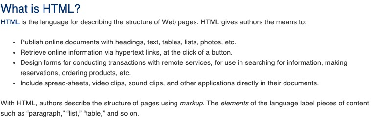
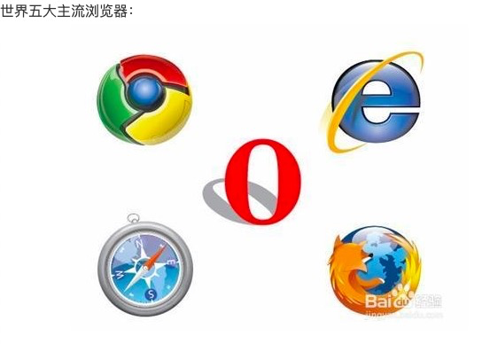

title: "1-2 HTML & CSS 初探"
catalog: true
date: 2019-08-17
subtitle: "HTML和CSS零基础权威入门"
header-img: "Demo.png"
tags:
术语的作用：可以降低沟通成本，往往代表一种专业性，
含义：互联网
含义：万维网联盟，是一个非营利性组织
官网：w3.org
作用：为互联网提供各种标准 比如：HTML标准
含义：可扩展的标记性语言 extension markup language
作用：用于定义文档结构
举例：
人类语言格式
请在每周一下午两点，从人人网下载最新美剧《权力的游戏》
XML格式
<任务>
<执行日期>每周一</执行日期>
<执行时间>下午两点</执行时间>
<下载地址>人人网</下载地址>
<下载目标>最新版《权力的游戏》</下载目标>
</任务>
标签的定义是可扩展的
标准的定义：W3C网站里有明确的准确的定义标准

MDN：Mozilla Decelopment NetWork；
是一个Mozilla的社区 里面可以查到很多标准的定义
官网：https://developer.mozilla.org/zh-CN/docs/Web
标准的定义：也可以在W3C网站找到相关描述

这些设备上 都装有浏览器内核，所以可以执行html, css, javascript
浏览器由两个部分组成
1，Shell 外壳
2，core 内核（HTML，CSS，JS）
目前国内的浏览器：360内核，QQ浏览器，搜狗浏览器的浏览器都是用的别人家的内核
HTML5, CSS3 两个版本
HTML5: 2014提案
CSS3: 到目前为止，还未制定完成